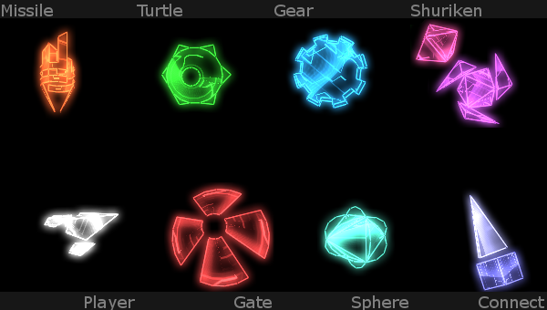

multiplex > ゲームについて
Player
プレイヤーは白い自機を二つのスティックを使って操作します。自機はステージ内を制限なく上下左右に移動し、ショットを放つことができます。このゲームの目的はひたすら逃げて生き延びることです。
pulseモード
オーソドックスなモードです。現在はこのモードのみです。
プレイヤーはショットの他にボムを使用できます。ボムを使用することで周囲の敵を一掃できますが、1ゲームでの使用回数に制限があります。
レベルは一定時間ごとに上昇し、レベルアップ時に敵は一旦全滅します。5の倍数のレベルに到達するごとにロックが解除され、新たにそこから開始できるようになります。
ハイスコアを目指す
- 敵を倒すと、敵の基本スコアにレベルに応じた倍率((1+level)^2)がかかってスコアに加算されます。
- Gateで巻き込んで敵を倒すと、通常の5倍のスコアが得られます。
- ボムによる破壊はスコアを得られません。
- レベルアップ時に消滅する敵からは、1/5のスコアが得られます。
Enemys (score)
- Missile (50)
- 速い速度で直線上を往復し続ける。
- Turtle (20)
- まとわりつくように自機を追尾し、自機のショットを回避しようとする。
- Gear (15)
- ゆっくり加速しながらと自機に近づく。
- Shuriken (30)
- ショットを何度か耐えることができ、ダメージを受けるほど加速して自機を追いかける。
- Gate (100)
- 耐久力があり、一度攻撃すると周囲の敵を飲み込み体力を回復し始める。敵を飲み込みすぎると炸裂して強力なShurikenとMissileを生み出す。破壊に成功したとき、周囲の敵を巻き込んで消滅する。
- Sphere (10)
- ゆったりと漂う。
- Connect (200)
- 後ろにスコアのないキューブを残しつつフィールドを直進し続ける。